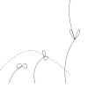
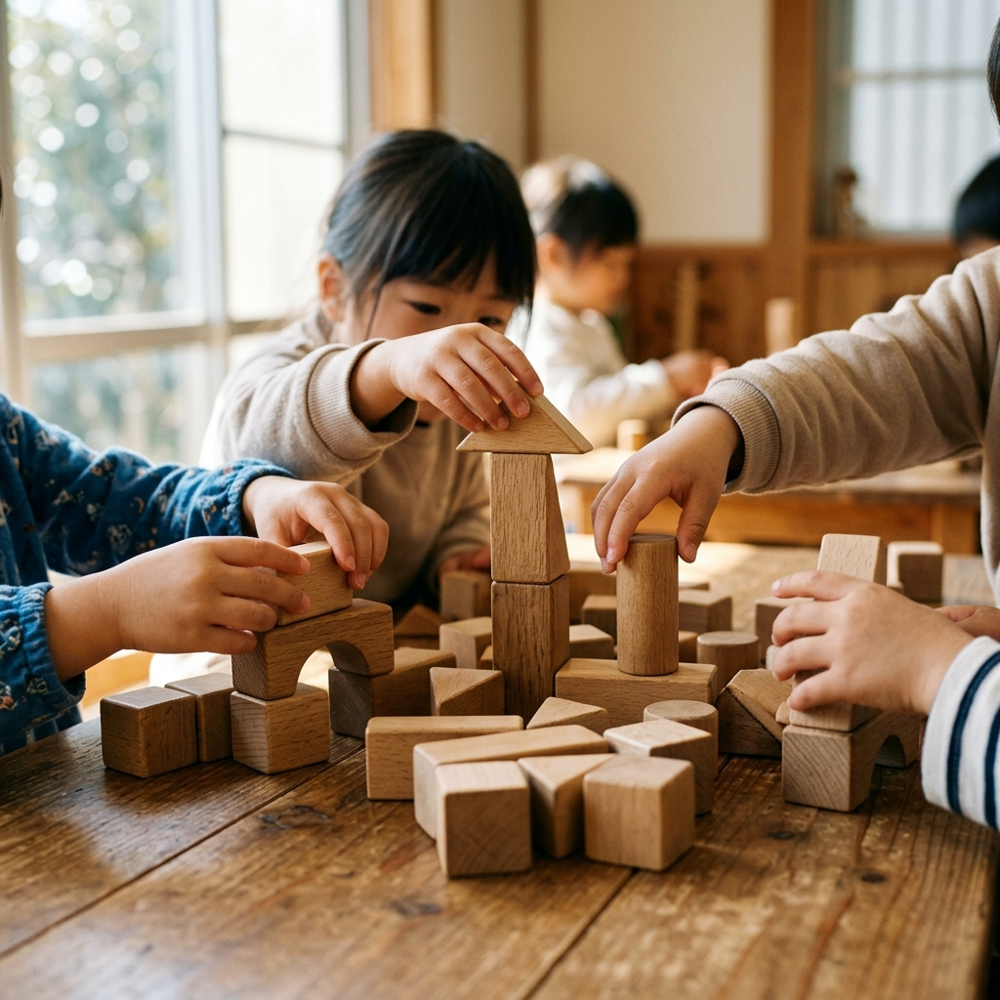
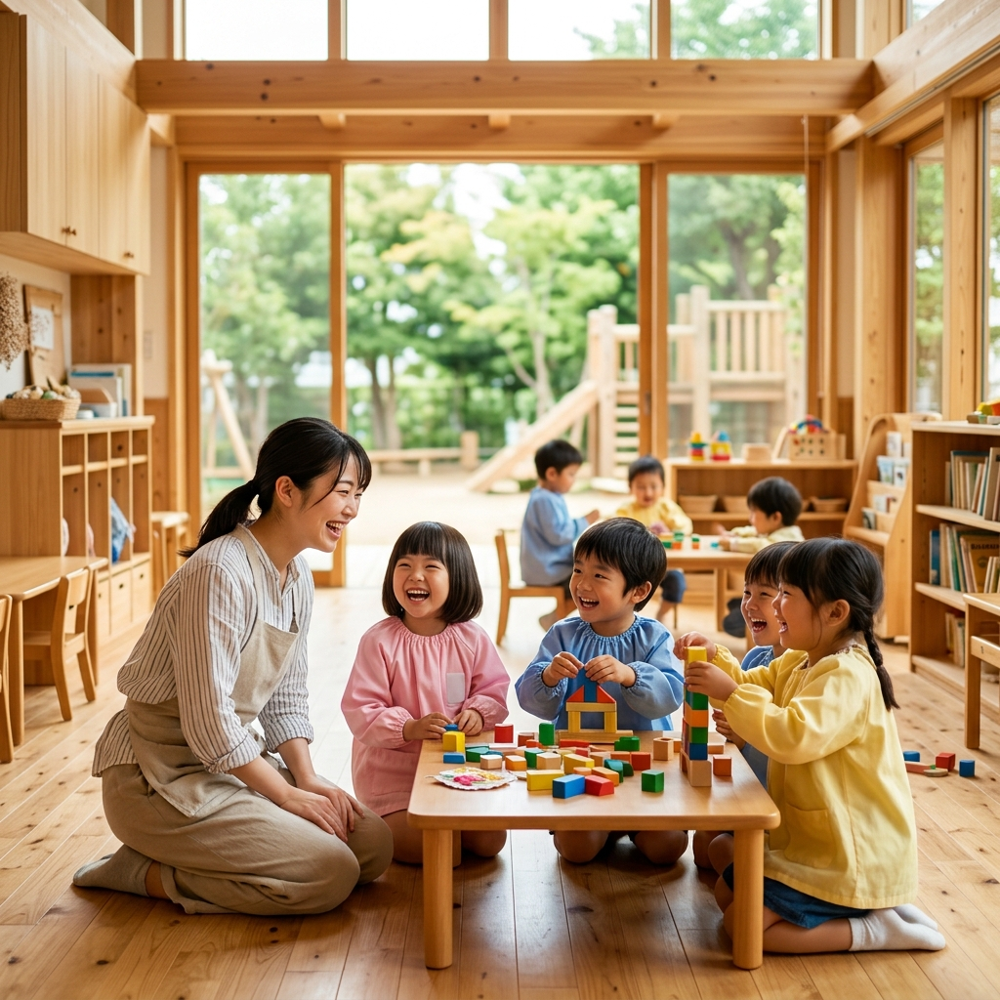
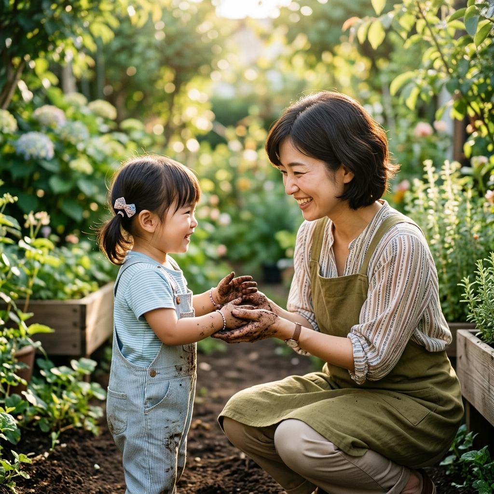
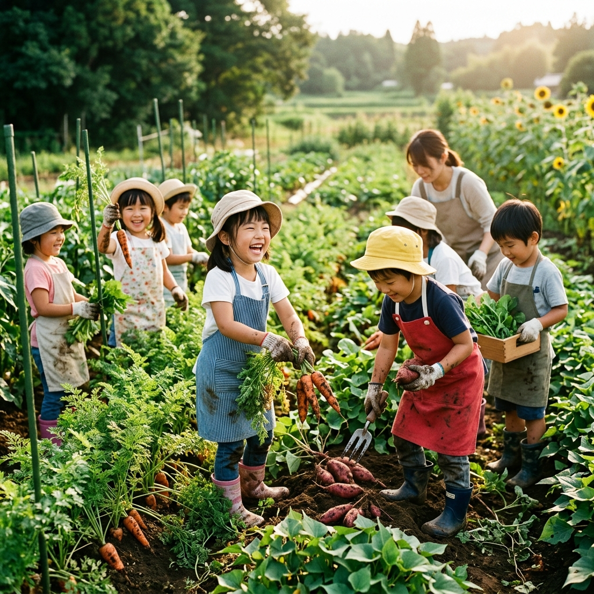
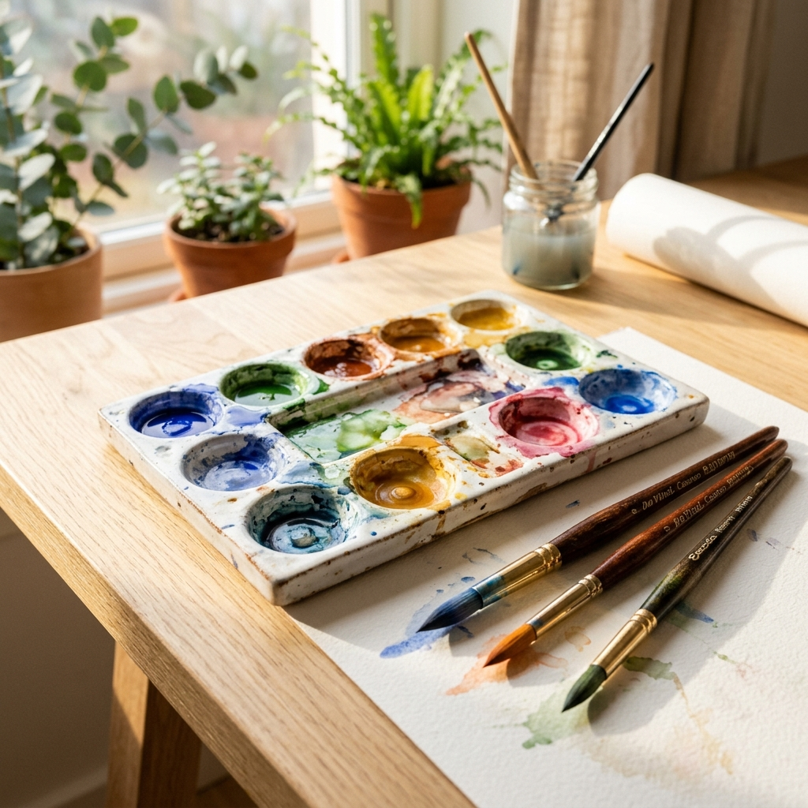
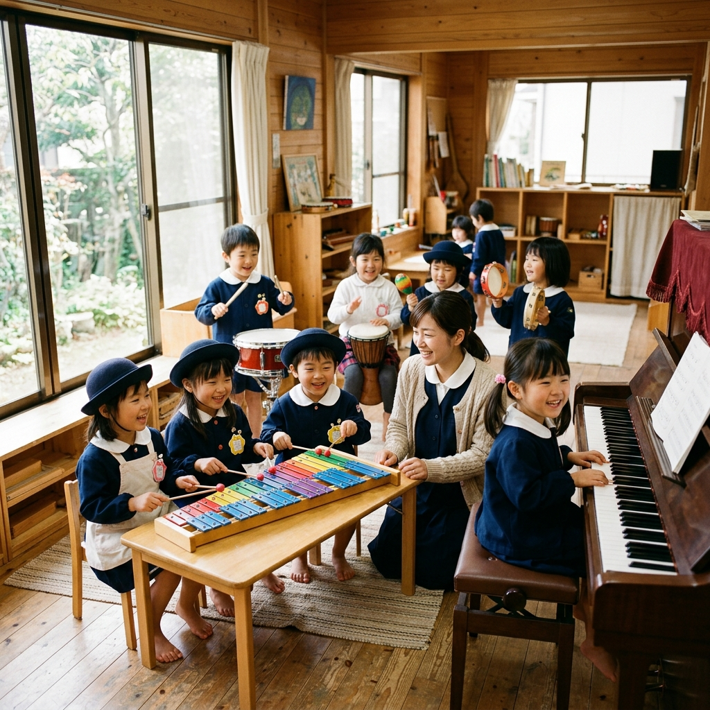
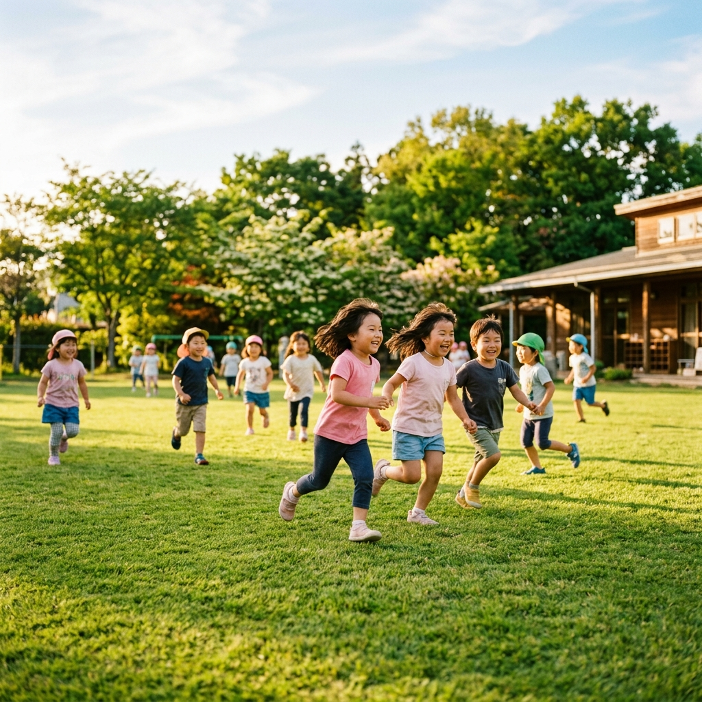
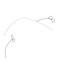
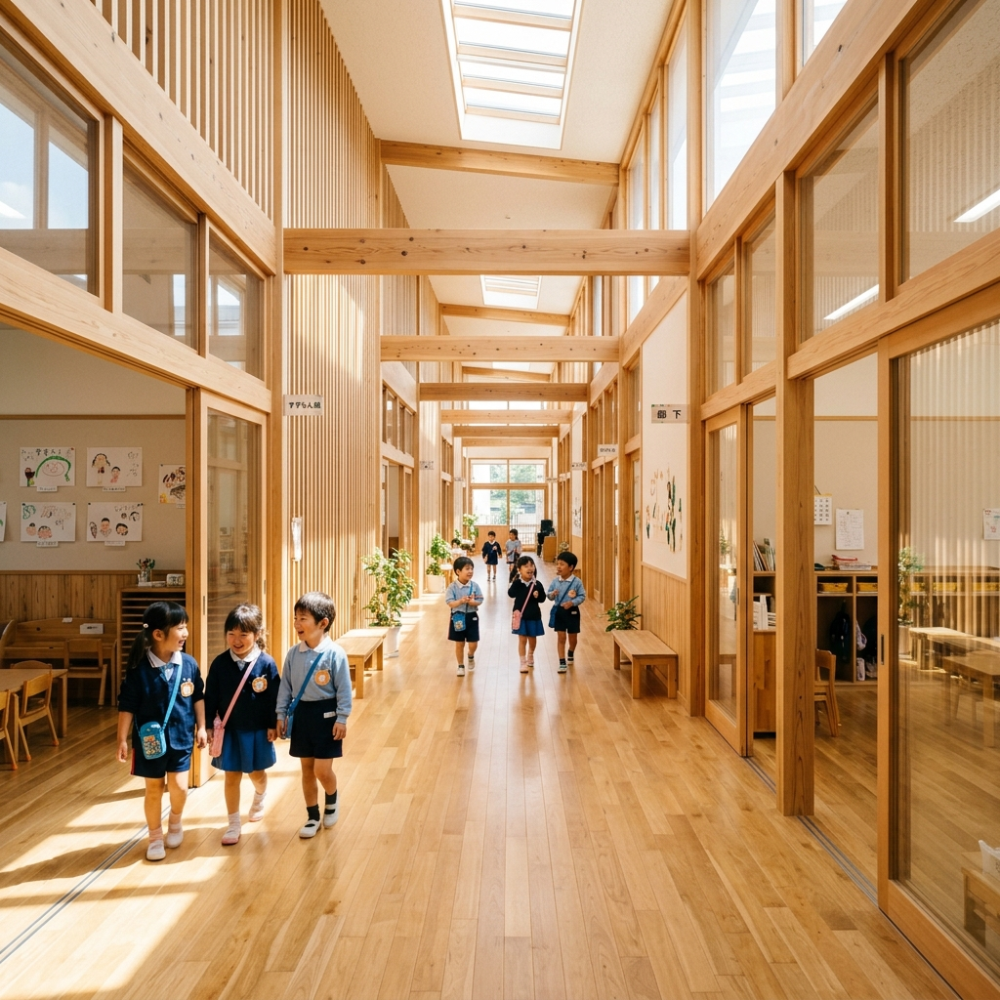

Midorigaoka Kindergarten · Since 1985
子どもたちは、毎日、日常の中で何百もの「なんで？」に出会います。
なんで虫は土の中にいるの？
なんで雨が降ると虹ができるの？
なんで友達は泣いているの？
みどりが丘幼稚園が大切にしているのは、その「なんで？」に、正しい答えより先に、「いっしょに確かめてみよう」と言える場所をつくることです。
子どもは失敗しながら育ちます。泥だらけになって、転んで、泣いて、また立ち上がる。その繰り返しが、生きていく力になると私たちは信じています。
みどりが丘幼稚園は、その「小さな発見」に、いつもそっと寄り添います。
幼児期は、人格の基礎となる最も大切な時期です。
大人の「こうあるべき」を押し付けるのではなく、
その子が持つ無限の可能性と好奇心を、
「そのまま」の形で伸ばしていく環境を目指しています。



01 FIRST TRY

子どもたちの声が響く園庭で、
ひとりの先生が、
園児の目線にしゃがみこんでいます。
泥だらけの手を優しく握りながら、
できた！の瞬間を、ていねいに。
これは、未来を育む人
たちの小さな物語です。

Experience 01 : Local Farm
土に触れる食育プログラム

Experience 02 : Art Studio
本物の絵の具で描く体験

Experience 03 : Music Hall
木の楽器に触れる時間

Experience 04 : Sports
芝生の上で走る体験
Experience 05 : Library
毎月新しい絵本と出会う

